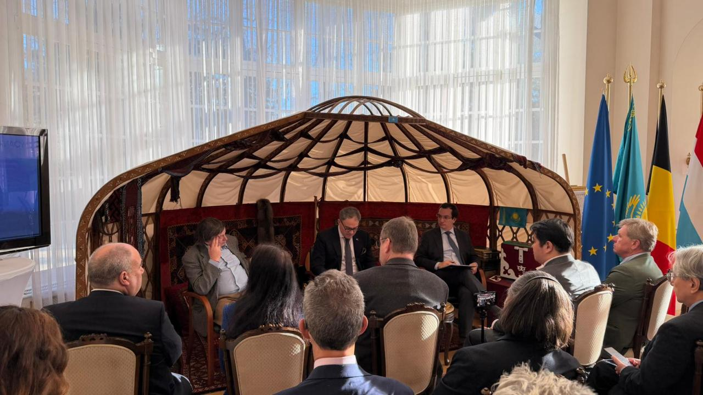
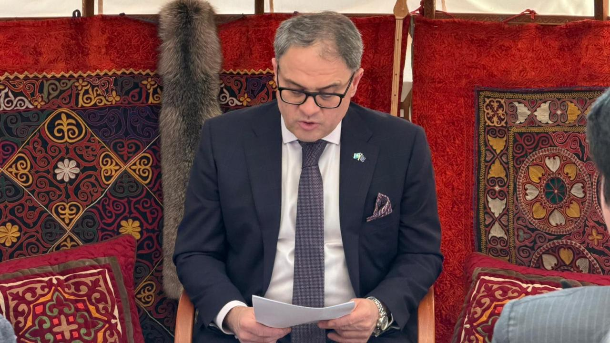
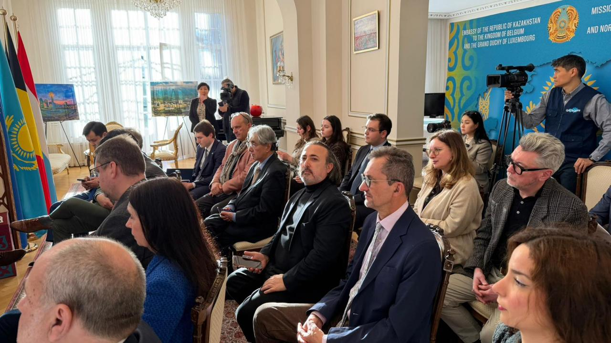
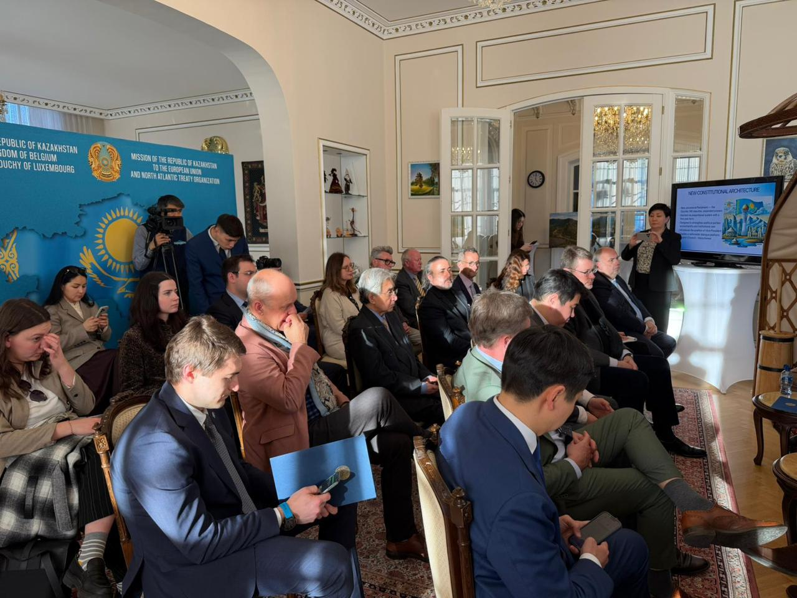

On 2 March in Brussels, “Shanyraq Dialogues” hosted a discussion on Kazakhstan’s constitutional reform and the 15 March referendum.
The proposed changes reinforce human rights protections and may further strengthen the Kazakhstan–EU partnership.
Episode 1 ·
Constitutional reform, the 15 March referendum, and Kazakhstan–EU cooperation.





On 2 March in Brussels, “Shanyraq Dialogues” hosted a discussion on Kazakhstan’s constitutional reform and the 15 March referendum.
The proposed changes reinforce human rights protections and may further strengthen the Kazakhstan–EU partnership.